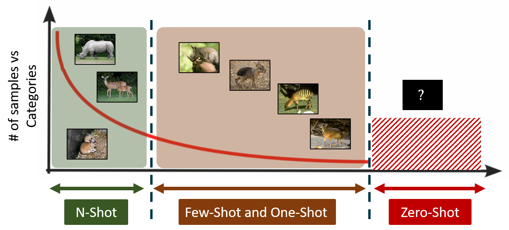
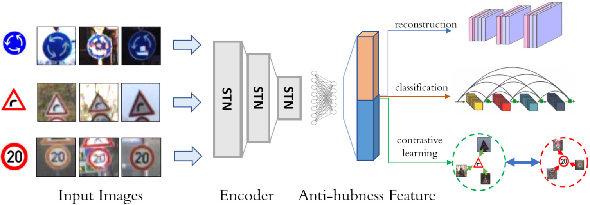
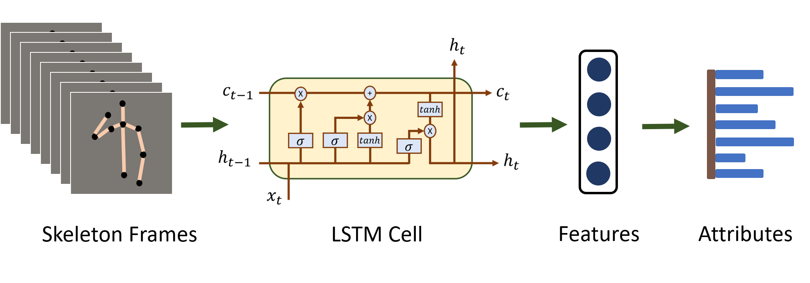
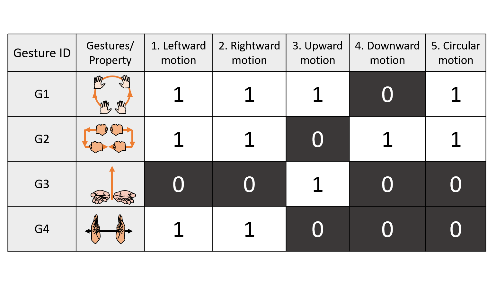
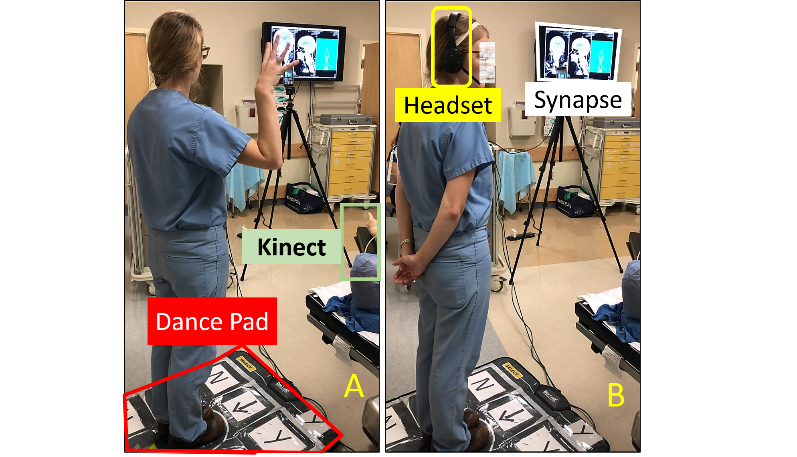
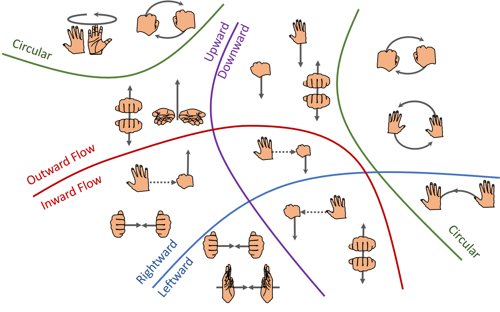

April 2021
There are significant differences between the way machines and humans represent knowledge, assimilate and learn new concepts. For instance, machines require hundreds of examples to learn to classify, however, humans can efficiently discriminate categories just by looking at few examples of them or solely based on semantic information. The next generation learning techniques such as few-shot, one-shot and zero-shot learning will aid this ultimate goal of building machines that can continually learn like humans.


This work proposes to learn an image-to-image translation task in which the goal is to predict the class prototypes from raw images. This approach regulates the latent space by inherently reducing data hubness and it further incorporates contrastive and multi-task losses to increase the discriminative ability of few-shot models.

This project studies the effectiviness of three kinds of features: 1. heuristic-based, 2. raw velocity and 3. deep-network-based features in the context of zero-shot learning for gesture recognition. In addition, this work proposes a linear and bi-linear model that jointly optimizes for semantic and classification losses.

A general framework that inherently incorporates gesture descriptors into the agreement analysis. A new metric referred to as soft agreement rate (SAR) to measure the level of agreement was proposed. Our computational experiments to demonstrate that existing agreement metrics are a special case of our approach.

This project lasted for over four years and is funded by the Agency of Healthcare Research and Quality. The main goal is to reduce the touch-based infections by building a touchless system powered by speech and gestures in the OR. User experiments were conducted with surgeons to know their preferneces and to test the system. Read more

This work presents the first annotated database of attributes for the categories present in ChaLearn 2013 and MSRC-12 datasets. We relied on literature in semantic and computational linguistics, and crowdsourced annotation platforms such as Amazon Mechanical Turk to build this attribute-based dataset for gestures.

DESK (Dexterous Surgical Skill) dataset comprises a set of surgical robotic skills collected during a surgical training task using three robotic platforms: the Taurus II robot, Taurus II simulated robot, and the YuMi robot. This dataset was used to test the idea of transferring knowledge across different domains (eg from Taurus to YuMi robot) for a surgical gesture classification task.